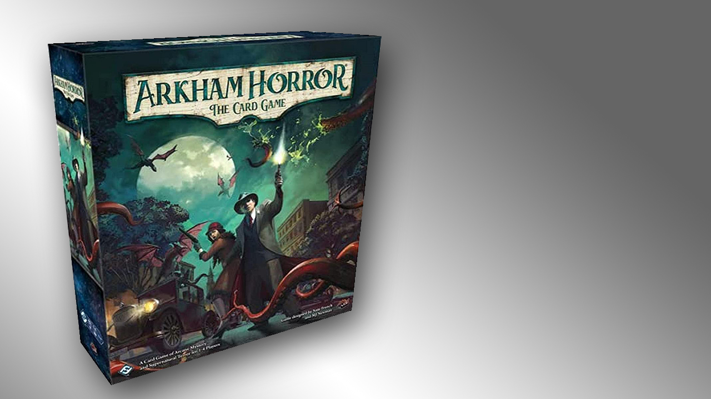

Finally, we are able to go over the review of the latest Marvel Champions Box expansion, Mutant Genesis. Just like we all thought, we loved it! It has everything we wanted. Playing as Collosus or Kitty Pryde (Shadow Cat), is super versatile, while one is more of a protection style, the other let's you switch back and forth different states.
In this review we will go into the Lovecraftian lore with Arkham Horror the card game. Spoiler: it is a great game. Everything works perfectly. The game mechanics are very polished. If you like Lovecraft, or Horror style games you are gonna love this one!
Sushi Go is without a doubt my go to game when I have a big-sized party. It is fast to catch on to. People always have a blast and even when they don't understand exactly how the point system works, they have fun fighting for completing their combos, or trying to ruin someone elses combos.
Yes, in this game you get to play with this map. That was enough for me. But if it ain't enough for you, don't worry. This game is a puzzler style game, in which you and your friends play detective following clues in this gigantic, dinner-table-sized map. It has a "finding Wally" feeling. It is fun, smart and everything ini between.